Abandono de empleados

Este caso vemos como una empresa detecto que la rotacion de empleados podia ser un problema y mas que eso un costo implicito no contemplado.
Para pdoer ver este echo se utilizo la base de datos de caso real proporcionada por DS4B, "https://ds4b.teachable.com/" , donde nos pondremos en busqueda de calcular los costos implicitos, y proporcionar a RRHH quienes de los empleados tienen mayor probabilidad de abandonar la empresa, esto para que ellos tomen las acciones nescesarias para su fidelizacion.
Pedimos una primera vista de cómo es la estructura de los datos.
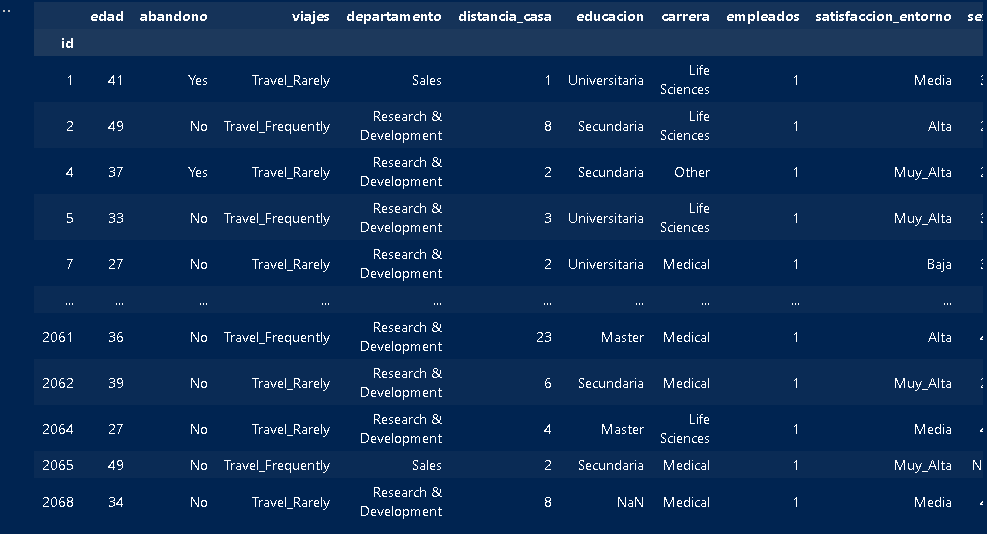Ahora veremos como son los datos si son obj, int o float
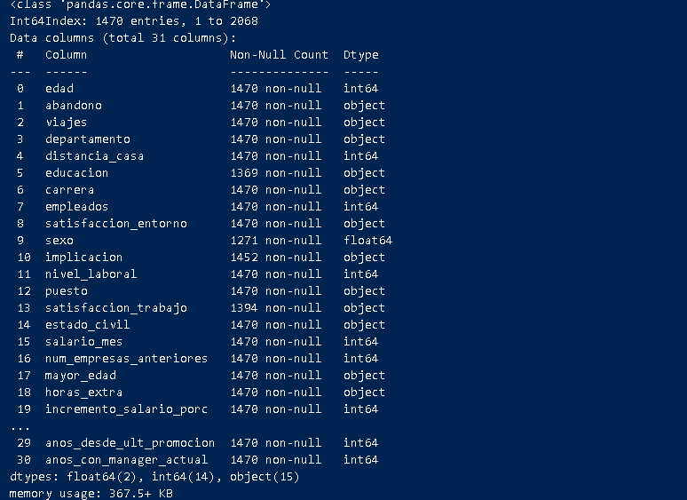Pedimos ver variables tienen valores Nulos y que cantidad tienen, esto para ver si es tratable o no la falta de estos datos.
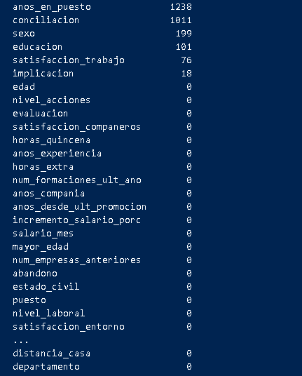De las 6 características que tienen datos faltantes, vemos que conciliación y años en el puesto tienen más datos faltantes que observaciones, por lo que es mejor sacarlos del estudio para evitar posibles sesgos.
Las 4 restantes: Sexo Educación Satisfacción Implicación
Estos valores nulos se van a tratar posterior a los estudios de las variables con los valores más probables de respuesta, además veremos si es que todas las características restantes son significativas para el análisis o si deberían ser eliminadas.
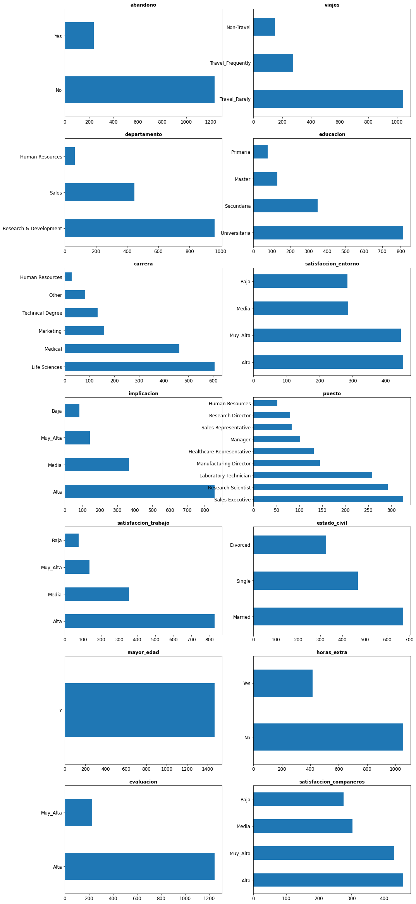De esta imagen vemos que deberíamos eliminar la característica de “Mayor de edad” porque solo tiene un valor.
Y se imputan a los valores nulos de las características: Educación: Universitaria Satisfacción: Alta Implicación: Alta
Ahora veremos que sucede con las características que son numéricas, Esto pidiendo un resumen de los datos.
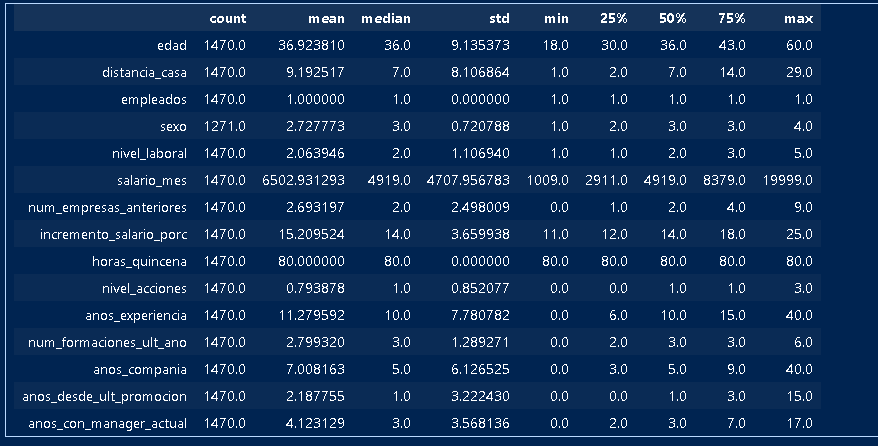Se prefiere sacar la variable sexo, Asi tambien empleados tiene solo un valor, y no es algo relevante para el estudio.
Lo mismo sucede con horas de quincena que tiene la media, mediana en 80 y no tienen variación. Es mejor sacarla.
Ahora preguntamos ¿Cuál es la tasa de abandono?
Ahora vamos a mapear un perfil de empleado que abandona la empresa. Esto lo haremos combinando los datos de perfiles de empleados y si salieron o no de la empresa en el último año.
Por ejemplo vemos un cuadro donde pondremos la educación y que porcentaje de personas que cumple con esta categoría han abandonado la empresa en el último año. En el caso de la gente que solo tiene primaria completa, el 30% abandonó la empresa en el último periodo.
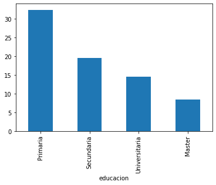Por ejemplo vemos un cuadro donde pondremos la educación y que porcentaje de personas que cumple con esta categoría han abandonado la empresa en el último año. En el caso de la gente que solo tiene primaria completa, el 30% abandonó la empresa en el último periodo.
Estado civil.
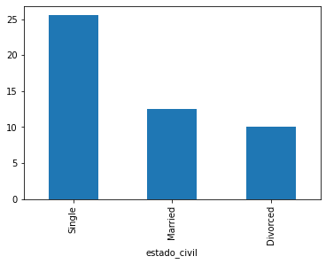De los solteros que están en plantilla el 25% abandonó la empresa.
Ahora pediremos ver que puesto es el que más rotación tuvo.
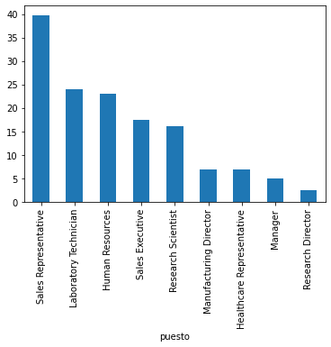Vemos que el puesto con más rotación fue el representativo de ventas.
Y el salario.
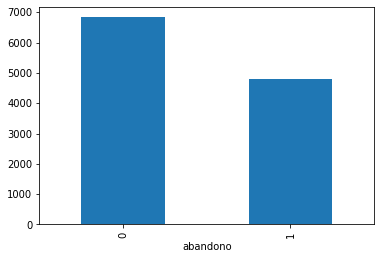Vemos que el perfil de empleado que más abandonaría la empresa es. Bajo nivel educativo Trabaja en ventas Soltero Bajo salario
AHORA PASAREMOS A EL MODELO DE MACHINE LEARNING.
Primero procedemos a pasar todas las variables categóricas a numéricas, esto por medio de generarlas una dummy para cada posible categoría, Ejemplo. viaja pasará a tener 3 posibles valores, antes solo tenía la opción de poner “No viaja, Viaja frecuentemente y viaja raramente”. Se mantendrá el dato con un valor 1 (true) en el caso que tenía la persona, y 0 (false) en los otros casos.
Por lo que sí teníamos una persona que viaja de manera frecuente ahora su respuesta se verá de la siguiente forma:
No viaja:0 Viaja frecuentemente:1 Viaja rara vez: 0
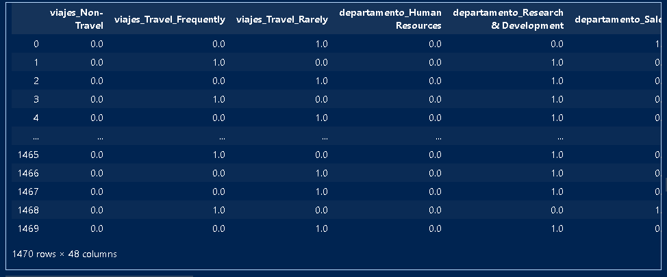Este cuadro muestra cómo fue el efecto en la variable viaje, el mismo método se usó para todas las variables categóricas
Una vez verificado que no hay inconvenientes y que tenemos tanto las variables numéricas como las nuevas variables dummy listas para poder usar, procedemos con la separación de los datos.
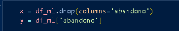Aquí ya separamos a “y” como variable dependiente (target) y a “x” todas las demás variables.
Luego debemos pedir una separación del dataset a usar entre valores “train” que serán los que entrenan el modelo y los valores “train” que serán los que usare para validar el modelo
Usaré “DecisionTreeClassifier” es un modelo predictivo basado en un árbol de decisiones. En este árbol, cada nodo interno representa una "decisión" basada en el valor de una característica, y cada hoja representa el resultado de una clasificación.
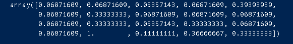Esto es el array con los valores de la probabilidad que cada empleado nos abandone en el data set x_train
El "ROC" (Receiver Operating Characteristic) es una curva que representa la relación entre la tasa de verdaderos positivos (TPR, True Positive Rate) y la tasa de falsos positivos (FPR, False Positive Rate) para diferentes umbrales de clasificación. La métrica AUC (Area Under the Curve) se refiere al área bajo la curva ROC.
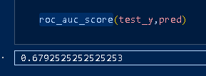Esto implica que el modelo ayuda a predecir el comportamiento de los empleados con probabilidad de abandono.
Ahora voy a poner dentro del dataset la variable abandono para ver la probabilidad de que ocurriera una salida de la empresa de este empleado. En caso que sea 1 el empleado tiene una alta probabilidad de abandonar la empresa.
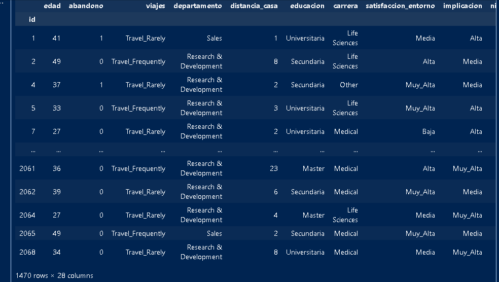Este estudio finaliza aquí, La base de datos puede ser administrada al jefe de Recurso humano y poner en conocimiento para que tome las medidas necesarias según sea el caso de cada empleado.
En repaso se hizo:
- Previsualización de datos.
- Eliminación de datos irrelevantes.
- Tratamiento de datos.
- Visualizacion de datos.
- Manipulacion de Base de Datos.
- Creación de variable relevante.
- Testeo de modelo predictivo.
- Conclusiones finales.
Espero te haya gustado leerlo, recuerda que hay mas secciones que puedes explorar sobre los analisis que realizo, en la parte Mis Proyectos